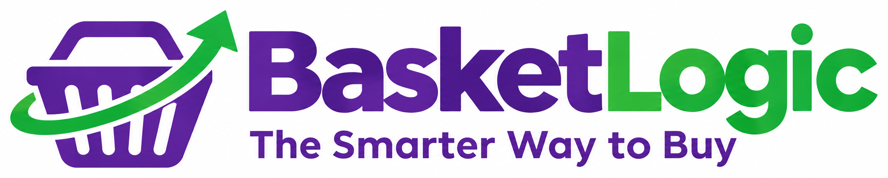

01☷
Build your list
Add products and details that matter, like brand, size, quantity, and acceptable alternatives.
Start with your needs →

BasketLogic is being built to help you compare shopping options, see the bigger picture, and make more confident buying decisions.
Start with what you need. Decide what matters most.
Start with what you need, compare the available options, and shape a shopping plan around what matters to you.
Add products and details that matter, like brand, size, quantity, and acceptable alternatives.
Explore product and shopping options across participating sources as data becomes available.
Consider overall value, convenience, budget, and the number of stops that work for you.
Features and data availability will depend on participating retailers and licensed data sources. Live price comparisons are not currently offered on this website.
BasketLogic is being built to help you compare shopping options across stores, find a mix that fits your needs, and keep more of your money in your pocket.
Explore prices from multiple stores as participating data becomes available.
Consider the right combination of stores and items—not just one store.
Less guesswork. More informed choices every time you shop.
Illustrative concept. Live retailer pricing and savings comparisons are not currently available on this website.
BasketLogic's goal is to make shopping decisions clearer, not to let advertising decide what gets recommended.
Shopping recommendations are intended to reflect your selected priorities.
Any future sponsored offers should be clearly identified and kept separate from optimizer results.
We aim to use responsible data practices and explain how information is used.
BasketLogic is exploring ways to help businesses connect with shoppers through relevant offers and understand shopping needs through responsible, privacy-conscious insights.
We're interested in conversations with retailers, product brands, manufacturers, and data partners as the platform develops.
Explore a partnership →BasketLogic does not currently claim any retailer or brand partnerships. Partnership opportunities are exploratory.
Smarter shopping is about more than finding the lowest price on one product. It's about looking at the bigger picture—your whole list, your time, your preferences, and the choices available to you.
BasketLogic is being developed with a simple purpose: make better-informed buying decisions easier for everyday people.
Sign up to hear about BasketLogic's progress, early-access opportunities, and launch updates.